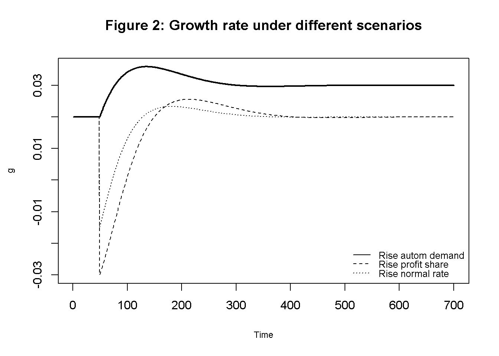
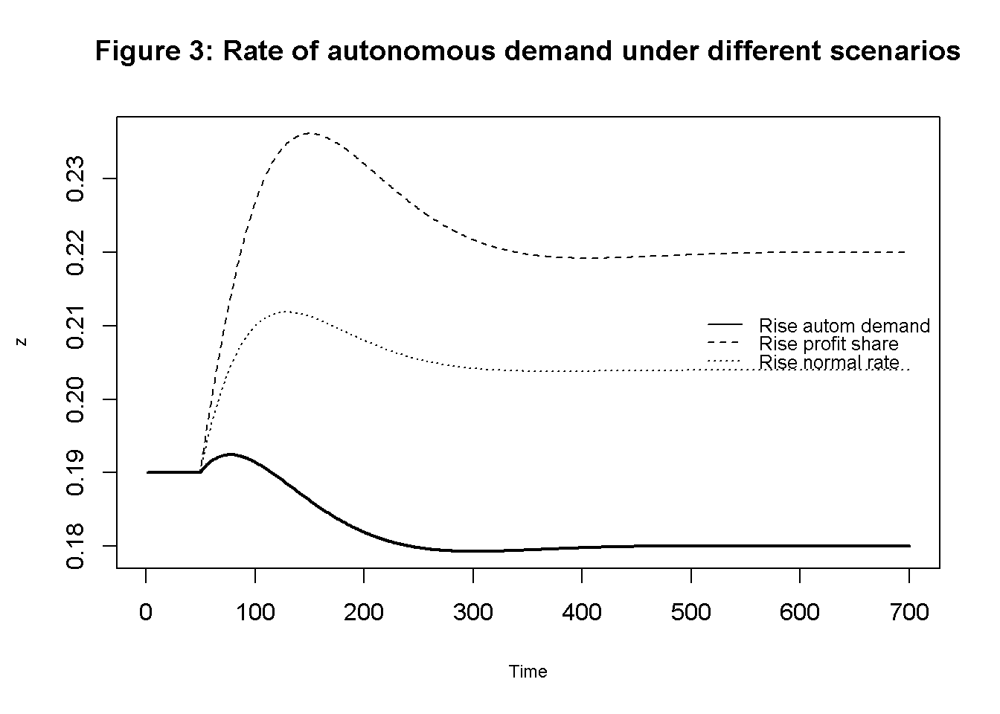
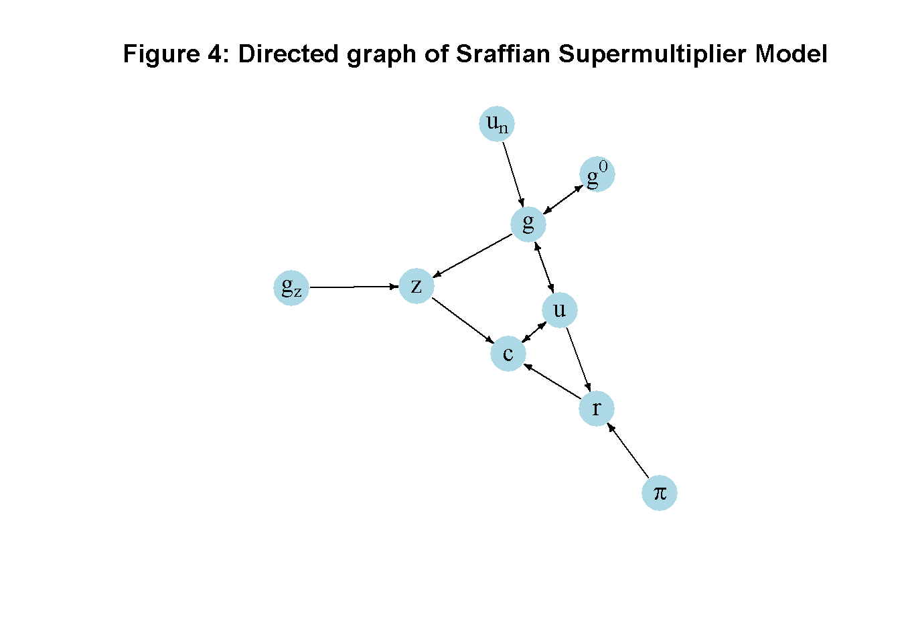

#Clear the environment
rm(list=ls(all=TRUE))
#Set number of periods
Q = 1000
# Set number of scenarios (including baselines)
S=4
# Set period in which exogenous shift will occur
q=50
#Create (S x Q) matrices in which equilibrium solutions from different parameterisations will be stored
u=matrix(data=0,nrow=S,ncol=Q) # rate of capacity utilisation
g=matrix(data=0,nrow=S,ncol=Q) # growth rate of capital stock
s=matrix(data=0,nrow=S,ncol=Q) # saving rate
c=matrix(data=0,nrow=S,ncol=Q) # consumption rate
r=matrix(data=0,nrow=S,ncol=Q) # profit rate
g0=matrix(data=0,nrow=S,ncol=Q)# expected growth rate of capital stock
z=matrix(data=0,nrow=S,ncol=Q) # autonomous demand rate
#Set constant parameter values
g1=0.2 # Sensitivity of investment with respect to utilisation
sr=0.8 # propensity to save out of profits
mu=0.08 # adjustment speed of expected growth rate
d=0.1 # time increment
# Set and initialise exogenous variables/parameters that will be shifted
pi=matrix(data=0.35,nrow=S,ncol=Q) # profit share
gz=matrix(data=0.02,nrow=S,ncol=Q) # growth rate of autonomous demand
un=matrix(data=0.75,nrow=S,ncol=Q) # normal rate of capacity utilisation
# Set parameter values for different scenarios
gz[2,q:Q]=0.03 # scenario 2: rise in autonomous demand growth
pi[3,q:Q]=0.4 # scenario 3: rise in profit share
un[4,q:Q]=0.8 # scenario 4: rise in normal rate of utilisation
# Initialise endogenous variables at equilibrium values
u[,1]=un[,1]
g[,1]=gz[,1]
s[,1]=g[,1]
c[,1]=un[,1]-s[,1]
g0[,1]=gz[,1]
z[,1]=sr*pi[,1]*un[,1]-gz[,1]
r[,1]=pi[,1]*un[,1]
# Simulate the model by looping over Q time periods for S different scenarios
for (i in 1:S){
for (t in 2:Q){
for (iterations in 1:1000){ # iterate the model 1000-times in each period
#(1) Profit rate
r[i,t] =pi[i,t]*u[i,t]
#(2) Saving
s[i,t] = -z[i,t] + sr*r[i,t]
#(3) Consumption
c[i,t] = u[i,t] - s[i,t]
#(4) Investment
g[i,t] = g0[i,t] +g1*(u[i,t] - un[i,t])
#(5) Capacity utilisation
u[i,t] = c[i,t] + g[i,t]
#(6) Dynamic adjustment of expected growth rate of capital stock
g0[i,t] = g0[i,t-1] + mu*(g[i,t-1]-g0[i,t-1])*d
#(7) Dynamic adjustment of autonomous demand
z[i,t] = z[i,t-1] + z[i,t-1]*(gz[i,t-1] - g[i,t-1])*d
} # close iterations loop
} # close time loop
} # close scenarios loop12 A Sraffian Supermultiplier Model
Overview
The Sraffian supermultiplier model was proposed by Serrano (1995) to integrate a Sraffian long-run equilibrium into a post-Keynesian growth model.1 The model requires the long-run rate of capacity utilisation to settle on an exogenously given normal rate. This requires investment to fully adjust to any changes in economic activity so as to bring back actual utilisation to the desired normal rate. As a result, investment expenditures (in the long-run) are assumed to be free of any idiosyncratic components such as Keynesian ‘animal spirits’. Long-run growth is then driven by those components of autonomous demand that do not create productive capacity – autonomous consumption in the simplest version of the model. An increase in the growth rate of autonomous consumption will stimulate economic activity and induce firms to adjust their expectations about long-run growth towards the new rate given by autonomous demand growth.
Income distribution is exogenous in this model. An increase in the wage share has an expansionary effect on economic activity and growth in the short-run as it increases consumption (investment is assumed to be independent of income distribution). However, this expansionary effect is only temporary as economic activity will eventually settle back on the normal rate of capacity utilisation, and the growth rate towards the rate given by autonomous demand growth. The absence of long-run effects of income distribution on output and growth constitutes a key difference between the Sraffian supermultiplier model and the post-Kaleckian model, in which there is no normal rate of capacity utilisation and no autonomous (non-capacity creating) demand.
This is a model of long-run steady state growth. In the steady state, all endogenous variables grow at the same rate.2 The model contains two state variables that determine the model’s dynamics: the ratio of autonomous demand to the capital stock (which changes during adjustment periods where the growth rate has not yet settled on the rate given by autonomous demand growth) and the expected growth rate of the capital stock, which sluggishly adjusts to the rate given by autonomous demand growth. We consider a continuous-time version of the model presented in chapter 6.5.8 of Lavoie (2022) .3
The Model
The following equations describe the model: \[ r_t=\pi u_t \tag{12.1}\] \[ s_t=-z_t + s_r r_t \tag{12.2}\] \[ c_t= u_t-s_t \tag{12.3}\] \[ g_t=g^0_t+g_1(u_t-u_n) \tag{12.4}\] \[ u_t=c_t+g_t \tag{12.5}\] \[ \dot{g^0_t}=\mu(g_t-g^0_t) \tag{12.6}\] \[ \dot{z_t}=z_t(g_z-g_t), \tag{12.7}\]
where \(r\), \(s\), \(c\), \(g\), \(u\), \(g^0\), and \(z\) are the profit rate, the saving rate, the consumption rate, the investment rate, the rate of capacity utilisation, the expected growth rate, and the rate of autonomous demand, respectively. A dot over a variable represents the derivative with respect to time (\(\dot{x}=\frac{d x}{d t}\)).
Equation 12.1 decomposes the profit rate (total profits over capital stock) into the product of the profit share \(\pi\) (total profits over total output) and the rate of capacity utilisation (actual output over capital stock).4 Note that the wage share is given by \(1-\pi\). By Equation 12.2, the economy-wide saving rate is given by the negative of the rate of autonomous demand (\(z\)), which in this version of the model is autonomous consumption, i.e. dissaving, and saving out of profits (\(s_r\)). It is assumed that workers do not save. Equation 12.3 simply states that consumption is income not saved. According to Equation 12.4, investment is determined by an autonomous component \(g_0\) that will be specified below and by the deviation of capacity utilisation from its normal rate \(u_n\). In other words, firms expand capacity whenever the actual rate of utilisation exceeds the desired normal rate. Equation 12.5 is the goods market equilibrium condition assuming that the rate of capacity utilisation adjusts to clear the goods market in the short run. Equation 12.6 is a key equation in the Sraffian supermultiplier approach, which posits that firms (sluggishly) adjust the expected growth rate to the actual growth rate. Finally, Equation 12.7 is an identity that traces changes in the rate of autonomous demand that stem from (temporary) mismatches between the exogenously given growth rate of autonomous demand (\(g_z\)) and the actual growth rate.
Simulation
Parameterisation
Table 1 reports the parameterisation used in the simulation. Besides a baseline (labelled as scenario 1), three further scenarios will be considered. In scenario 2, the growth rate of autonomous demand \(g_z\) increases. In scenario 3, the profit share \(\pi\) rises. In scenario 4, the normal rate of capacity utilisation \(u_n\) increases. The model is initialised at the equilibrium of the baseline parameterisation and the various shifts then occur in period 50.
Table 1: Parameterisation
| Scenario | \(\pi\) | \(s_r\) | \(g_1\) | \(u_n\) | \(\mu\) | \(g_z\) |
|---|---|---|---|---|---|---|
| 1: baseline | 0.35 | 0.8 | 0.2 | 0.75 | 0.08 | 0.02 |
| 2: rise in autonomous demand growth (\(g_z\)) | 0.35 | 0.8 | 0.2 | 0.75 | 0.08 | 0.03 |
| 3: rise in profit share (\(\pi\)) | 0.4 | 0.8 | 0.2 | 0.75 | 0.08 | 0.02 |
| 4: rise in normal rate of capacity utilisation (\(u_n\)) | 0.35 | 0.8 | 0.2 | 0.8 | 0.08 | 0.02 |
Simulation code
Python code
import numpy as np
# Set number of periods
Q = 1000
# Set number of scenarios (including baselines)
S = 4
# Set period in which exogenous shift will occur
q = 50
# Create (S x Q) matrices for equilibrium solutions
u = np.zeros((S, Q)) # rate of capacity utilization
g = np.zeros((S, Q)) # growth rate of capital stock
s = np.zeros((S, Q)) # saving rate
c = np.zeros((S, Q)) # consumption rate
r = np.zeros((S, Q)) # profit rate
g0 = np.zeros((S, Q)) # expected growth rate of capital stock
z = np.zeros((S, Q)) # autonomous demand rate
# Set constant parameter values
g1 = 0.2 # Sensitivity of investment with respect to utilization
sr = 0.8 # propensity to save out of profits
mu = 0.08 # adjustment speed of expected growth rate
d = 0.1 # time increment
# Set and initialize exogenous variables/parameters that will be shifted
pi = np.full((S, Q), 0.35) # profit share
gz = np.full((S, Q), 0.02) # growth rate of autonomous demand
un = np.full((S, Q), 0.75) # normal rate of capacity utilization
# Set parameter values for different scenarios
gz[1, q:] = 0.03 # scenario 2: rise in autonomous demand growth
pi[2, q:] = 0.4 # scenario 3: rise in profit share
un[3, q:] = 0.8 # scenario 4: rise in normal rate of utilization
# Initialize endogenous variables at equilibrium values
u[:, 0] = un[:, 0]
g[:, 0] = gz[:, 0]
s[:, 0] = g[:, 0]
c[:, 0] = un[:, 0] - s[:, 0]
g0[:, 0] = gz[:, 0]
z[:, 0] = sr * pi[:, 0] * un[:, 0] - gz[:, 0]
r[:, 0] = pi[:, 0] * un[:, 0]
# Simulate the model by looping over Q time periods for S different scenarios
for i in range(S):
for t in range(1, Q):
for iterations in range(1000): # iterate the model 1000 times in each period
# (1) Profit rate
r[i, t] = pi[i, t] * u[i, t]
# (2) Saving
s[i, t] = -z[i, t] + sr * r[i, t]
# (3) Consumption
c[i, t] = u[i, t] - s[i, t]
# (4) Investment
g[i, t] = g0[i, t] + g1 * (u[i, t] - un[i, t])
# (5) Capacity utilization
u[i, t] = c[i, t] + g[i, t]
# (6) Dynamic adjustment of expected growth rate of capital stock
g0[i, t] = g0[i, t - 1] + mu * (g[i, t - 1] - g0[i, t - 1]) * d
# (7) Dynamic adjustment of autonomous demand
z[i, t] = z[i, t - 1] + z[i, t - 1] * (gz[i, t - 1] - g[i, t - 1]) * dPlots
Figures 1-3 depict the response of the three main endogenous variables to changes in the exogenous variables. In the second scenario (solid line), the growth rate of autonomous demand increases from 2% to 3%. As a result, the rate of capacity temporarily increases but then returns to the level given by the normal rate, as the rate of autonomous demand falls due to the increase in the capital stock. By contrast, the growth rate permanently settles to the new rate given by the autonomous rate.
In the third scenario (dashed line), the profit share rises, which initially has a contractionary effect on the rate of utilisation and growth. Both variables then briefly overshoot due to the increase in the autonomous demand rate and then return to their previous values.
# Set maximum period for plots
Tmax=700
# Capacity utilisation
plot(u[2, 2:(Tmax+1)], type="l", col=1, lwd=2, lty=1, font.main=1,cex.main=1,
ylab = 'u',xlab = 'Time',ylim=range(max(u[, 2:Tmax]),min(u[, 2:Tmax])),cex.axis=1,cex.lab=0.75)
title(main="Figure 1: Rate of capacity utilisation under different scenarios",cex=0.8 ,line=2)
lines(u[3, 2:(Tmax+1)],lty=2)
lines(u[4, 2:(Tmax+1)],lty=3)
legend("bottomright", legend=c("Rise autom demand", "Rise profit share", "Rise normal rate"),
lty=1:3, cex=0.8, bty = "n", y.intersp=0.8)# Growth
plot(g[2, 2:(Tmax+1)], type="l", col=1, lwd=2, lty=1, font.main=1,cex.main=1,
ylab = 'g',xlab = 'Time',ylim=range(max(g[, 2:Tmax]),min(g[, 2:Tmax])),cex.axis=1,cex.lab=0.75)
title(main="Figure 2: Growth rate under different scenarios",cex=0.8 ,line=2)
lines(g[3, 2:(Tmax+1)],lty=2)
lines(g[4, 2:(Tmax+1)],lty=3)
legend("bottomright", legend=c("Rise autom demand", "Rise profit share", "Rise normal rate"),
lty=1:3, cex=0.8, bty = "n", y.intersp=0.8)
# Autonomous demand rate
plot(z[2, 2:(Tmax+1)], type="l", col=1, lwd=2, lty=1, font.main=1,cex.main=1,
ylab = 'z',xlab = 'Time',ylim=range(max(z[, 2:Tmax]),min(z[, 2:Tmax])),cex.axis=1,cex.lab=0.75)
title(main="Figure 3: Rate of autonomous demand under different scenarios",cex=0.8 ,line=2)
lines(z[3, 2:(Tmax+1)],lty=2)
lines(z[4, 2:(Tmax+1)],lty=3)
legend("right", legend=c("Rise autom demand", "Rise profit share", "Rise normal rate"),
lty=1:3, cex=0.8, bty = "n", y.intersp=0.8)
Python code
## Plots (here for capacity utilisation only)
import matplotlib.pyplot as plt
# Set maximum period for plots
Tmax = 700
# Plot capacity utilization
plt.plot(u[1, 1:Tmax], label='Rise autom demand', linestyle='-', linewidth=2, color='k')
plt.plot(u[2, 1:Tmax], label='Rise profit share', linestyle='--', linewidth=2, color='k')
plt.plot(u[3, 1:Tmax], label='Rise normal rate', linestyle='-.', linewidth=2, color='k')
plt.title('Rate of Capacity Utilization under Different Scenarios')
plt.xlabel('Time')
plt.ylabel('u')
plt.legend(loc='lower right')
plt.show()Finally, a rise in the normal rate (dotted line) initially has contractionary effects on utilisation and growth but eventually raises utilisation to a permanently higher level. The growth rate returns to its previous value.
Directed graph
Another perspective on the model’s properties is provided by its directed graph. A directed graph consists of a set of nodes that represent the variables of the model. Nodes are connected by directed edges. An edge directed from a node \(x_1\) to node \(x_2\) indicates a causal impact of \(x_1\) on \(x_2\).
# Construct auxiliary Jacobian matrix for 9 variables:
# r, c, g, u, g0, z, pi, gz, un
M_mat=matrix(c(0,0,0,1,0,0,1,0,0,
1,0,0,1,0,1,0,0,0,
0,0,0,1,1,0,0,0,1,
0,1,1,0,0,0,0,0,0,
0,0,1,0,0,0,0,0,0,
0,0,1,0,0,0,0,1,0,
0,0,0,0,0,0,0,0,0,
0,0,0,0,0,0,0,0,0,
0,0,0,0,0,0,0,0,0), 9, 9, byrow=TRUE)
# Create adjacency matrix from transpose of auxiliary Jacobian and add column names
A_mat=t(M_mat)
# Create directed graph from adjacency matrix
library(igraph)
dg=graph_from_adjacency_matrix(A_mat, mode="directed", weighted=NULL)
# Define node labels
V(dg)$name=c("r", "c", "g", "u", expression(g^0), "z", expression(pi), expression(g[z]), expression(u[n]))
# Plot directed graph
plot(dg, main="Figure 4: Directed graph of Sraffian Supermultiplier Model", vertex.size=20, vertex.color="lightblue",
vertex.label.color="black", edge.arrow.size=0.3, edge.width=1.1, edge.size=1.2,
edge.arrow.width=1.2, edge.color="black", vertex.label.cex=1.2,
vertex.frame.color="NA", margin=-0.08)
Python code
# Directed graph
import networkx as nx
import matplotlib.pyplot as plt
import numpy as np
# Define the Jacobian matrix
M_mat = np.array([[0, 0, 0, 1, 0, 0, 1, 0, 0],
[1, 0, 0, 1, 0, 1, 0, 0, 0],
[0, 0, 0, 1, 1, 0, 0, 0, 1],
[0, 1, 1, 0, 0, 0, 0, 0, 0],
[0, 0, 1, 0, 0, 0, 0, 0, 0],
[0, 0, 1, 0, 0, 0, 0, 1, 0],
[0, 0, 0, 0, 0, 0, 0, 0, 0],
[0, 0, 0, 0, 0, 0, 0, 0, 0],
[0, 0, 0, 0, 0, 0, 0, 0, 0]])
# Create adjacency matrix from transpose of auxiliary Jacobian and add column names
A_mat = M_mat.transpose()
# Create the graph from the adjacency matrix
G = nx.DiGraph(A_mat)
# Define node labels
nodelabs = {0: "r",
1: "c",
2: "g",
3: "u",
4: r"$g^0$",
5: "z",
6: r"$\pi$",
7: r"$g_z$",
8: r"$u_n$"}
# Plot the directed graph
pos = nx.spring_layout(G, seed=43)
nx.draw(G, pos, with_labels=True, labels=nodelabs, node_size=300, node_color='lightblue',
font_size=10)
edge_labels = {(u, v): '' for u, v in G.edges}
nx.draw_networkx_edge_labels(G, pos, edge_labels=edge_labels, font_color='black')
plt.axis('off')
plt.show()In Figure 4, it can be seen that the growth rate of autonomous demand (\(g_z\)), the profit share (\(\pi\)), and the normal rate of capacity utilisation (\(u_n\)) are the key exogenous variable of the model. The profit rate (\(r\)), consumption (\(c\)), the autonomous demand rate (\(z\)), investment (\(g\)), the rate of utilisation (\(u\)), an the expected growth rate (\(g_0\)) form a closed loop (or cycle) within the system. For example, an increase in the growth rate of autonomous demand increases consumption, which raises the rate of capacity utilisation, growth, and the expected growth rate. In a second-round effect, the increase in the growth rate then feeds back negatively into the autonomous demand rate, which leads to a return of the rate of capacity utilisation to its previous value.
Analytical discussion
To find the short-run equilibrium solutions for \(u\) and \(g\), first substitute Equation 12.1-Equation 12.4 into Equation 12.5 and solve for \(u\): \[ u^* = \frac{g_0+z-g_1u_n}{s_r \pi-g_1}. \] From this, we get: \[ g^* = g_0 + g_1(u^* - u_n). \] The long-run equilibrium is given by \(u^{**}=u_n\), \(g^{**}=g_z\), and (from Equation 12.7) \(z^{**}=u_n s_r \pi - g_z\).
The dynamics are governed by Equation 12.6-Equation 12.7. The Jacobian matrix is: \[ J(g^0, z)=\begin{bmatrix} \frac{\mu g_1}{s_r\pi-g_1}& \frac{\mu g_1}{s_r\pi-g_1} \\ -z(\frac{g_1}{s_r\pi-g_1} +1)& \frac{-zg_1}{s_r\pi-g_1} \end{bmatrix}. \]
The determinant of the Jacobian matrix evaluated at the long-run equilibrium is: \[ det(J^*) = \frac{(u_n s_r \pi - g_z)\mu g_1}{s_r\pi-g_1} > 0, \]
which is positive provided \(s_r\pi-g_1\), i.e. if the Keynesian stability condition holds.
The trace is:
\[ tr(J^*) = \frac{g_1(\mu-u_n s_r \pi + g_z)}{s_r\pi-g_1}. \]
Stability requires a negative trace, yielding a second stability condition: \(\mu<u_n s_r \pi - g_z\).
We can verify these analytical solutions by comparing them with the results from the numerical solution:
# Construct Jacobian matrix at the equilibrium
J=matrix(c((mu*g1)/(sr*pi[1,Q]-g1), (mu*g1)/(sr*pi[1,Q]-g1),
-z[1,Q]*(sr*pi[1,Q]/(sr*pi[1,Q]-g1)), -z[1,Q]*(g1/(sr*pi[1,Q]-g1))), 2, 2, byrow=TRUE)
J [,1] [,2]
[1,] 0.200 0.200
[2,] -0.665 -0.475# Obtain eigenvalues
ev=eigen(J)
(values <- ev$values)[1] -0.1375+0.1381801i -0.1375-0.1381801i# Obtain determinant and trace
det(J) # determinant[1] 0.038[1] -0.275# Check stability conditions for all scenarios
for (i in 1:S){
print(paste0("Scenario ", i, ":"))
print(sr*pi[i,1]>g1) # Keynesian stability condition
print(mu<sr*un[i,1]*pi[i,1]-gz[i,1])
}[1] "Scenario 1:"
[1] TRUE
[1] TRUE
[1] "Scenario 2:"
[1] TRUE
[1] TRUE
[1] "Scenario 3:"
[1] TRUE
[1] TRUE
[1] "Scenario 4:"
[1] TRUE
[1] TRUE
Python code
# Construct Jacobian matrix
J = np.array([
[(mu * g1) / (sr * pi[0, Q-1] - g1), (mu * g1) / (sr * pi[0, Q-1] - g1)],
[-z[0, Q-1] * (sr * pi[0, Q-1] / (sr * pi[0, Q-1] - g1)), -z[0, Q-1] * (g1 / (sr * pi[0, Q-1] - g1))]
])
print(J)
# Obtain eigenvalues, determinant, and trace
eigenvalues, eigenvectors = np.linalg.eig(J)
print(eigenvalues)
determinant_J = np.linalg.det(J)
print(determinant_J)
trace_J = np.trace(J)
print(trace_J)
# Check stability conditions for all scenarios
for i in range(1, S + 1):
print(f"Scenario {i}:")
print(sr * pi[i - 1, 0] > g1) # Keynesian stability condition
print(mu < sr * un[i - 1, 0] * pi[i - 1, 0] - gz[i - 1, 0])References
Blecker, Robert A., and Mark Setterfield. 2019. Heterodox Macroeconomics. Models of Demand, Distribution and Growth. Edward Elgar.
Dutt, Amitava Krishna. 2018. “Some Observations on Models of Growth and Distribution with Autonomous Demand Growth.” Metroeconomica 70 (2): 288–301. https://doi.org/10.1111/meca.12234.
Lavoie, Marc. 2022. Post-Keynesian Economics. New Foundations. 2nd ed. Edward Elgar.
Serrano, Franklin. 1995. “Long Period Effective Demand and the Sraffian Supermultiplier.” Contributions to Political Economy 14 (1): 67–90. https://doi.org/10.1093/oxfordjournals.cpe.a035642.
See chapter 7 in Blecker and Setterfield (2019), Dutt (2018), and chapter 6 in Lavoie (2022) for useful introductions. Note that contrary to what the name may suggest, this is a one-sector model.↩︎
All variables are normalised by the capital stock and thus rendered stationary.↩︎
Section 2.6 explains how continuous time models can be solved numerically.↩︎
For simplicity, it is assumed that the capital-potential output ratio is equal to unity. This implies that the ratio of actual output to potential output is equal to the ratio of actual output to the capital stock, so that the latter can be taken as a measure of the rate of capacity utilisation.↩︎